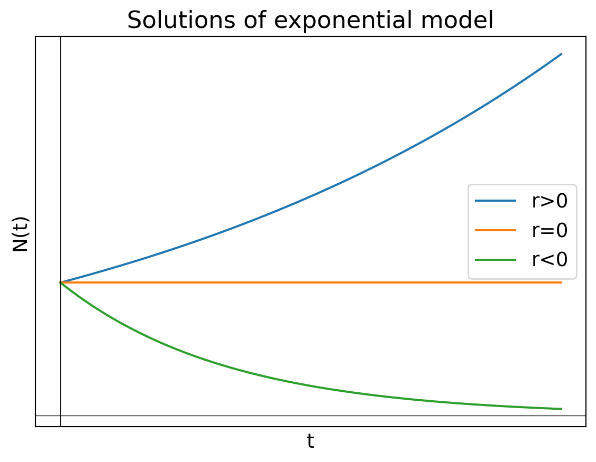
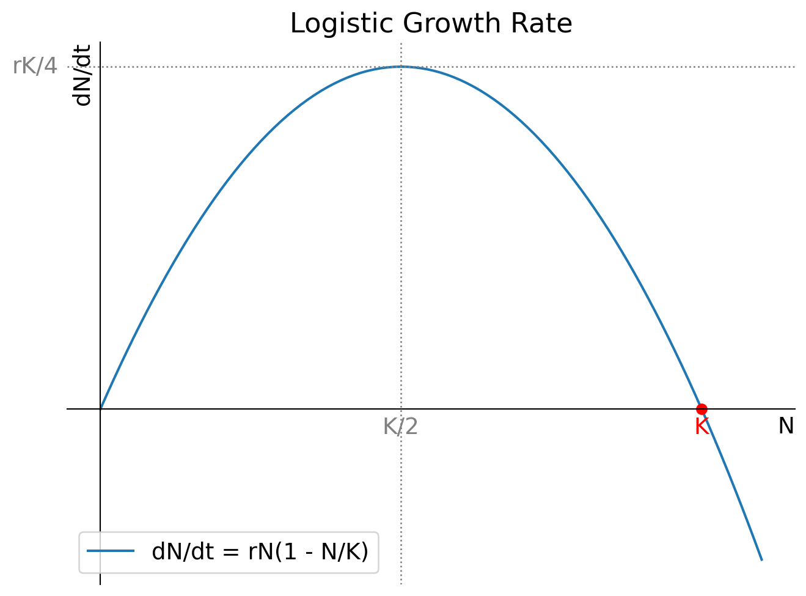
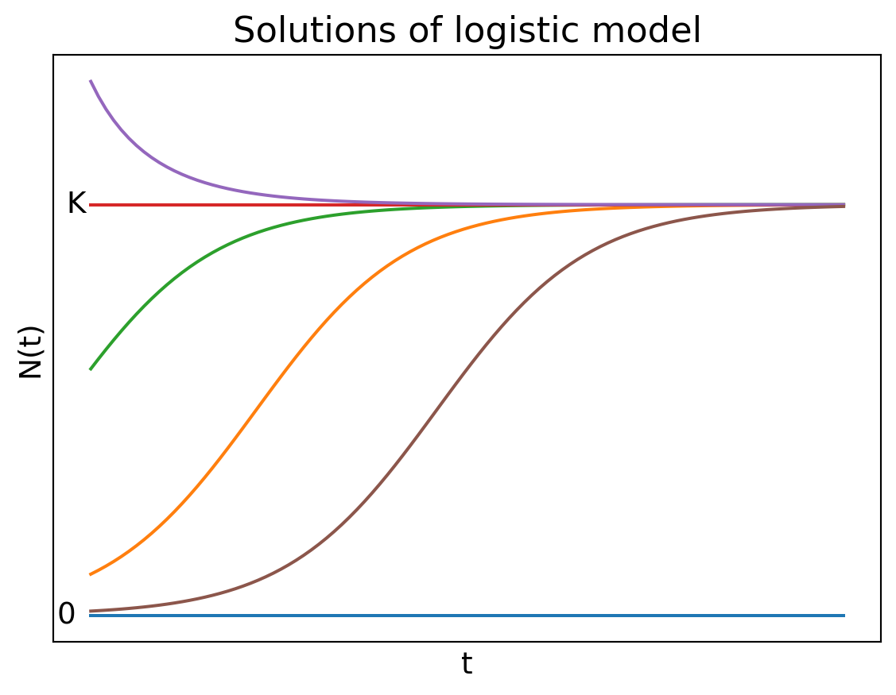

1 Continuous-time population models
We are interested in modelling the time evolution of the population number \(N(t)\), starting with the current population number \(N(0)=N_0\). Thinking about the processes by which the population number can change, we see that we can write the rate of change in the population number as \[ \frac{dN}{dt} = \text{birth rate} - \text{death rate} + \text{immigration rate} - \text{emigration rate}. \tag{1.1}\] The idea behind this approach is that if we understand how these processes depend on the population number \(N\), then we can find \(N(t)\) by solving the above differential equation. Different assumptions about the individual rates will give us different models for N(t). We will look at some influential models now.
1.1 Exponential model
This is the simplest and oldest model, introduced by Thomas Robert Malthus in 1798. If we assume that the per-capita birth rate \(b\) and the per-capita death rate \(d\) are fixed constants, then the general differential equation Eq. 1.1 becomes the linear equation \[ \frac{dN}{dt}=bN-dN=rN, \tag{1.2}\] where we introduced the new parameter \(r=b-d\). This equation is easy to solve: \[ N(t)=N_0e^{rt}. \tag{1.3}\] So if the birth rate exceeds the death rate and hence \(r>0\), the model predicts exponential growth. In the opposite case of lower birth rate than death rate the model predicts exponential decay of the population number towards extinction. Only when birth and death rates are perfectly equal can the population stay steady over time. We illustrate that in Figure 1.1.

1.2 Logistic model
Exponential population growth can not be maintained for ever. There will be a limit to the size of population that an ecosystem can maintain. When the population gets closer to this limit its growth rate will decrease, for example due to competition for limited food sources or space, or due to disease. This decrease in the growth rate is captured by the logistic equation \[ \frac{dN}{dt}=rN\left(1-\frac{N}{K}\right), \tag{1.4}\] where \(K\) is the carrying capacity of the environment. To see how the logistic equation captures the idea of a carrying capacity, we can look at the two limiting cases. When \(N\ll K\), the logistic equation reduces to the exponential equation Eq. 1.2. When \(N\approx K\), the growth rate is approximately zero.
In Figure 1.2 make a plot of the right-hand side of the logistic equation Eq. 1.4 to see how the growth rate depends on the population number.

From the plot we see that the growth rate is zero at \(N=0\) and \(N=K\), and it is maximal at \(N=K/2.\) By realising that \(dN/dt\) is the slope of the graph of \(N(t)\) we can sketch a few solutions to the logistic equation Eq. 1.4 in Figure 1.3.

The logistic equation Eq. 1.4 can be solved analytically to give \[ N(t)=\frac{K}{1+\left(\frac{K}{N_0}-1\right)e^{-rt}}=\frac{N_0 K e^{rt}}{K+N_0(e^{rt}-1)}. \tag{1.5}\]